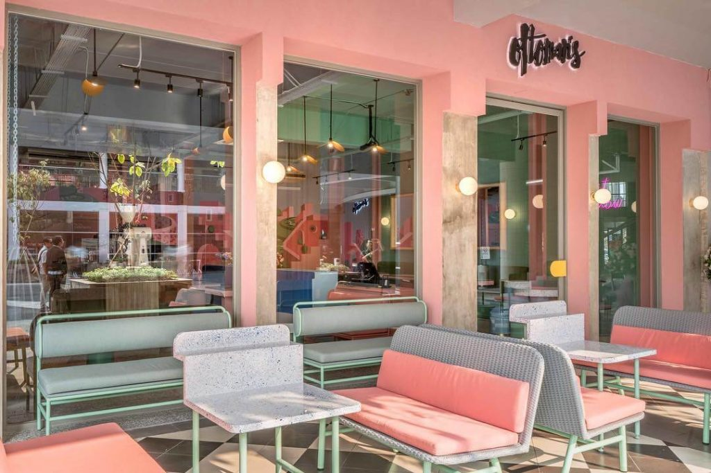

1 September 2019
Cafe Berkonsep Warna Pink di Jakarta
1. Ottoman's Coffee
Cafe ini memiliki desaign interior bernuansa pink dan mint. Banyak spot – spot yang instragammable, sehingga tidak heran cafe ini banyak digunakan influencer maupun anak – anak muda jaman sekarang untuk update di media sosial.
Menu yang disajikan antara lain coffee, brunch, dan dessert. Kebetulan waktu ke sana saya mencoba minuman dan dessertnya.

Bagi yang ingin ke sana weekend, sebaiknya menghindari jam makan siang karena rame banget sampai waiting list. Cabangnya ada di beberapa tempat, yang saya lampirkan di bawah ini adalah alamat salah satu cabangnya. Kalau ingin tahu lebih jelas bisa kunjungi instragamnya @ottomans.coffee
Lokasi:
Ottoman's Coffee
Sopo Del Tower | Jl. Mega Kuningan Barat III Lot 10, 1-6 Ground Floor Unit 01-02, RT.3/RW.3 RT.3/RW.3, RT.3/RW.3, Kuningan, Jakarta Selatan
Jam buka : Senin-Minggu jam 7 am – 7 pm
2. Fedwell

Fedwell ini sebenarnya bukan cafe, tapi lebih ke tempat makan. Menu yang disajikan adalah makanan sehat yang bernutrisi. Di sini kita bisa memilih sesuai menu atau mix sesuai keinginan kita sesuai dengan topping yang ada. Harganya sekitar Rp 100.000 – 200.000/orang.
Tempat makan ini didominasi warna pink, tempatnya tidak terlalu luas tapi cukup nyaman untuk digunakan makan bersama teman. Cabangnya ada di beberapa tempat, yang saya lampirkan di bawah ini adalah alamat salah satu cabangnya. Kalau ingin tahu lebih jelas bisa kunjungi instragamnya @fedwelljkt

Lokasi:
Fedwell
Jl. Senopati No.82, RT.7/RW.3, Selong, Kec. Kby. Baru, Kota Jakarta Selatan
Jam buka : 9 am – 10 pm